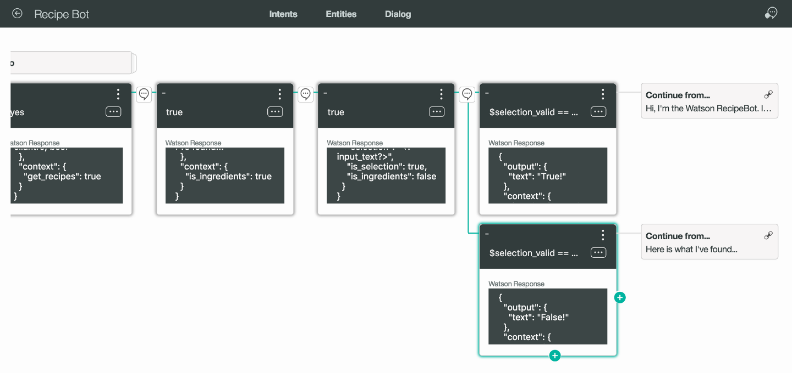

#botdev: GUI tools vs scripting languages ?
Hi TY Wang!
Thanks, you touched some good points!
I fully agree with your concerns about bots made just for developers. I call this approach: “hard coding” a bot. I full agree also about the necessity of a teamwork made by no-developers experts (on “conversational” UX, marketing, customer care, psychology, etc.)
there’s a GUI for designers to easily drag and drop logic blocks or messages to finish a flowchart on canvas. Developers then can connect the webhook and implement required functionalities based on the flowchart.
I have some doubts about the graphical tools you underline. Do you perhaps remember the hype in 90’s about these RAD (rapid application development) visual building tools (“GUI Lego”) that generate code … (e.g. I worked with some Smalltalk products many years ago)… but we have to admit they wasn’t a real success; in fact nowadays in 2016 we don’t use them anymore (more or less).

Now, back to the chatbots develop realms (#botdev), I’m a huge fan of scripting languages… because I think here we have the real decoupling of competences: dialog flow experts work on dialog scripts and usual programmers work on back-end services.
That’s why I’m fan of ChatScript and I’m support this great open source project, see draft article here:
and see also my previous notes:
In my vision, as developers of complex disrupting chatbots products and services, we need a common/shared scripting language with a standard syntax (e.g. I propose ChatScript language syntax and an evolution of that) to create reusable chatbots “functionalities” (= knowledge base reuse).
So, even if the supposed GUI Lego composition tool could help to set-up simple (chatbots) applications, immo a real evolution will start with the spread of common scripting language, with all related benefits of a human (and machine) knowledge “as source code”: that will allow to share source code scripts (in the open source community, as you rightly mention github!), to do analytics and (human or machine) post processing, etc. etc.
my two cents
giorgio